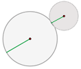

Resumen de circunferencia y círculo
Resumen de círcunferencia y círculo
- Circunferencia
- Círculo
- Posiciones respecto a...
- Ángulos
- Áreas
Circunferencia
Una circunferencia es una línea curva cerrada cuyos puntos están todos a la misma distancia de un punto fijo llamado centro.
Elementos de la circunferencia
| Centro | Radio | Cuerda |
|---|---|---|
 Punto del que equidistan todos los puntos de la circunferencia. |
Segmento que une el centro de la circunferencia con un punto cualquiera de la misma |
 Segmento que une dos puntos de la circunferencia. |
Diámetro | Arco | Semicircunferencia |
 Cuerda que pasa por el centro. |
 Cada una de las partes en que una cuerda divide a la circunferencia. Se suele asociar a cada cuerda el menor arco que delimita. |
 Cada uno de los arcos iguales que abarca un diámetro. |
Círculo
Es la figura plana comprendida en el interior de una circunferencia.
Elementos de un círculo
| Segmento circular | Semicírculo | Zona circular |
|---|---|---|
 Porción de círculo limitada por una cuerda y el arco correspondiente. |
 Porción del círculo limitada por un diámetro y el arco correspondiente. Equivale a la mitad del círculo. |
Porción de círculo limitada por dos cuerdas. |
Sector circular | Corona circular | Trapecio circular |
| Porción de círculo limitada por dos radios. |
 Porción de círculo limitada por dos círculos concéntricos. |
Porción de círculo limitada por dos radios y una corona circular. |
Posiciones relativas respecto a....
1 Posiciones relativas de un punto respecto a una circunferencia
| Interior |
Punto sobre la circunferencia |
Punto exterior a la circunferencia |
2 Posiciones relativas de una recta y una circunferencia
| Recta secante |
Recta tangente |
Recta exterior |
3 Posiciones relativas de dos circunferencias
3.1. Ningún punto en común:
| Exteriores |
Interiores |
Concéntricas |
3.2. Un punto en común:
|  Tangentes exteriores |
Tangentes interiores |
3.3. Dos puntos en común
| Secantes |
Ángulos en la circunferencia
1 Ángulo central: La medida de un arco es la de su ángulo central correspondiente.
2 Ángulo inscrito: Mide la mitad del arco que abarca.
3 Ángulo semiinscrito: Mide la mitad del arco que abarca.
4 Ángulo interior: Mide la mitad de la suma de las medidas de los arcos que abarcan sus lados y las prolongaciones de sus lados.
5 Ángulo exterior: Mide la mitad de la diferencia entre las medidas de los arcos que abarcan sus lados sobre la circunferencia.
Áreas
| Longitud de una circunferencia | Longitud de un arco de circunferencia | Área de un círculo |
|---|---|---|
 |
 |
 |
Área de un sector circular | Área de una corona circular | Área de un trapecio circular |
 |
Es igual al área del círculo mayor menos el área del círculo menor. |
 Es igual al área del sector circular mayor menos el área del sector circular menor. |
Área de un segmento circular |
 Área del segmento circular AB = Área del sector circular AOB − Área del triángulo AOB |
||